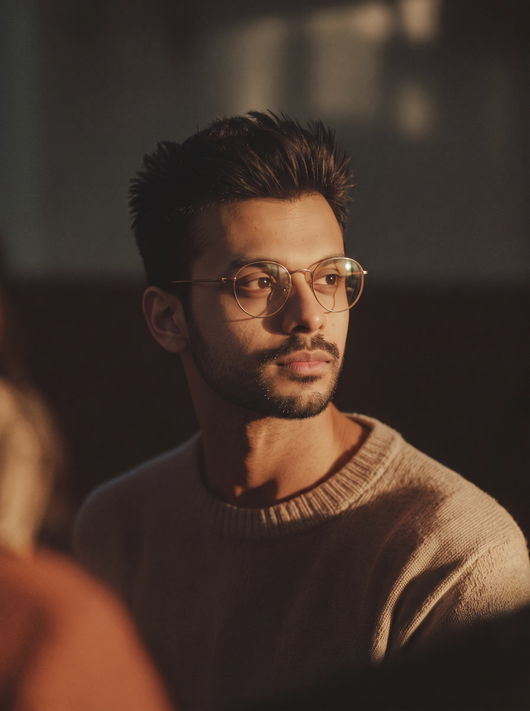

01 · Mobile Application · Healthcare
Tracto
A calm, human-first health companion that empowers patients and elevates task success metrics from 40% to 81%.
Concept ProjectOpen case study
✎ welcome to my little design corner
complete with sketches, sticky notes & one very helpful phone
Prashant Kumar; UI/UX designer from India, crafting calm, clear digital products.
Open for fresher UI/UX Designer roles
pinned, taped & ready to open
Four projects, fresh from the desk.
01 · Mobile Application · Healthcare
A calm, human-first health companion that empowers patients and elevates task success metrics from 40% to 81%.
Concept ProjectOpen case study

02 · Mobile Application · Fintech
A UPI-first expense tracker built around a daily “safe to spend today” number, so dozens of small payments never blur into a surprise low balance.
Concept ProjectOpen case study
03 · VR Experience · Space Education
Stand on the Moon, dock with the space station, walk on Mars — a comfort-first VR exploration that makes students feel how big space actually is.
Concept ProjectOpen case study
04 · Desktop Application · Productivity
A calm desktop workspace for freelance designers — projects, feedback, file versions, deadlines and payments in one place, instead of five apps and your head.
Concept ProjectOpen case study
notes to self, now pinned in public
The things I practise, prototype and keep improving.
01
End-to-end UX and UI for digital products — from research and flows to polished Figma interfaces that turn complex, high-friction problems into calm, intuitive experiences.
02
Tokenized, WCAG-compliant design systems with reusable components — like the Vitalis Design System — built for accessibility, consistency and rapid feature delivery.
03
Setting the visual direction of an interface — typography, layout, colour and micro-interactions — so every screen feels clear, consistent and unmistakably part of the same product.
04
Responsive website design and redesign, like the HealthPortal Web project — clarifying complex information and making it easy to find, understand and act on, on any screen size.
05
The foundations of product branding — logo direction, colour and typography — carried through into the interface, so a product looks and feels like one coherent brand.
06
Structured UX reviews and heuristic audits of existing interfaces — pinpointing friction, jargon and cognitive load, with practical recommendations for what to fix first.
a tiny interactive corner
Psst — click the same circle again to keep cycling.

PhotoPrashant · UI/UX Designer · India
a note about the human behind the desk
I'm Prashant, a UI/UX Designer and Product Thinker dedicated to turning complex, high-friction digital problems into calm, intuitive, and accessible user experiences. My journey into product design grew from a deep fascination with how people make decisions under pressure—and how thoughtful interface architecture can replace user anxiety with effortless clarity.
I specialize in healthcare and consumer digital products where empathy isn't optional. When someone is tracking daily vitals or trying to book the right doctor while feeling unwell, clinical jargon and cluttered directories erode trust. Through foundational user research, rapid Crazy 8s ideation, and iterative usability testing, I strip away unnecessary cognitive load so the next step always feels natural.
From architecting scalable, WCAG-compliant design systems and micro-interactions in Figma to collaborating closely with engineering teams during implementation, I focus on bridging human needs with measurable business outcomes.
Designing a calm, human-first health and appointment companion that eliminates daily logging fatigue, translates clinical metrics into plain language, and guides unwell patients from symptom to booked doctor in under 2 minutes.
“How might we help someone who doesn’t know which doctor to see book the right appointment in under 2 minutes, starting from how they feel?”
40% → 81%
+41% surge in end-to-end task completion
4.1 → 4.8/5
Validated across usability tests & surveys
5.6x
77% Agile-Scrum efficiency & 1.8x faster testing
10 / 10
Full AAA/AA contrast & keyboard compliance
Adults aged 18 to 65 who want to live healthier stop using tracking apps shortly after onboarding. Meanwhile, when they feel unwell, directory-first apps like Practo force them to guess which medical specialist title to search for before booking care.
Delivered via an iterative Agile-Scrum workflow, Tracto unifies wearable sync, live heart-rate zone trends, 1-tap workout/nutrition presets, and a 5-screen symptom-to-doctor booking flow.
| Problem | Design principle | Feature it produced |
|---|---|---|
| High Logging Friction | Keep daily logging effortless | 1-tap presets and wearable sync |
| Anxiety & Jargon | Plain language with reassuring context | Live heart-rate zone trends |
| Specialty Guesswork | Start from symptoms, not directories | Symptom-First Triage |
Know your rhythm - Vitals Dashboard
Eat with intention - Meal Log
Close your rings - Activity Tracking
Discovery research involved 12 participants stratified across three age brackets (3 aged 18–29, 4 aged 30–49, and 5 aged 50–65) under strict informed-consent protocols, paired with persona modeling (Maja, 25), empathy mapping, and a competitive audit of Practo.
Manual typing for meals and workouts is the primary reason users abandon trackers early. Replacing text inputs with 1-tap presets and wearable sync keeps daily logging effortless.
Raw resting heart-rate numbers presented with clinical terminology trigger anxiety rather than clarity, eroding user trust in the entire app.
Benchmarking Practo revealed that specialty search fails when an unwell patient only knows their symptoms. Triage must begin from "What is bothering you?"
Framing the problem around "How might we help someone who doesn't know which doctor to see book the right appointment in under 2 minutes, starting from how they feel?", I sketched 8 rapid concepts: (1) Body map tap, (2) Triage chat, (3) Symptom chips + severity slider, (4) Voice input, (5) Photo of skin issue, (6) Wearable nudge, (7) Calendar-first, and (8) Nearby clinics map. Evaluating them on an Impact vs. Effort Matrix highlighted #1 and #3 as Quick Wins and #6 and #2 as Big Bets—merging them into a 6-frame storyboard.
Designed first as greyscale low-fidelity wireframes to validate structure before applying visual tokens:
| System rule | How it works |
|---|---|
| Emergency Guardrail | Selecting "Chest pain" immediately surfaces an accessible aria-live emergency notice above the primary button. |
| Progressive Disclosure | Doctors are filtered and badged by selected symptoms ("Dr. Meera Iyer — Best match for Headache & Fever"). |
| Fitts’s Law & Error Prevention | Full-width 56px bottom Continue CTA stays muted until required choices are made; booked slots are locked. |
Full-width 56px Save button in the thumb zone; 4 activity chips, 3 intensities, and 4 duration presets prevent decision paralysis.
Related controls sit in clean white cards using familiar top-left close icons and standard segmented controls.
Calorie estimate updates live on tap; Save shows immediate progress and an Undo confirmation toast.
Save hidden as a tiny 10px low-contrast link in the top corner; close button dodges cursor; 20-option unsorted dropdown.
Cancel and Clear are the largest shiny buttons and wipe the form without confirmation; includes double-negative labels.
Freezes for 2.5 seconds on submit, throws cryptic error codes, and claims "Saved" even when the form is empty.
Built on native radio inputs for keyboard and screen-reader accessibility, selection updates three visual cues simultaneously (filled dot, mint surface tint, and teal border) so state never depends on color alone. Integrated into a 3-step signup prototype with live validation, 4-bar password strength meter, and reduced-motion support.
Inspired by Apple Health and Headspace, the visual system balances 60% Deep Teal/Mint, 30% Soft Neutrals, and 10% Coral/Amber accents with Bricolage Grotesque headings, Figtree body copy, and JetBrains Mono for tracked data metrics.
Remediated an inaccessible signup screen while keeping the exact same layout and brand feel: elevated contrast up to 15:1 AAA, bound explicit `
Triangulated findings across 8 moderated usability test participants, 3 heuristic evaluators, and 120 user surveys. Packaged the product into a responsive campaign poster ("Know your heart") annotated against 9 graphic design principles across 3:4 Print, 1:1 Square, and 9:16 Story formats.
Mobile Application / Fintech — Concept Project
A UPI-first expense tracker for young salaried users in India, designed around one clear number — what is safe to spend today — instead of backward-looking charts that only explain a low balance after the money is gone.
Young salaried users in India pay for almost everything by UPI — chai, autos, rent, subscriptions, splits with friends. Each payment takes two seconds, so dozens of small payments blur together, go untracked, and only surface as one confusing low balance at the end of the month. Existing trackers ask users to fix this with manual entry, which is exactly the habit that breaks first.
Budgeting tools that depend on typing every spend are abandoned quickly — the tracking habit dies before the insight arrives.
Money sits across multiple bank accounts, wallets and apps, so no single statement shows the whole picture.
Charts describe last month. They do not answer the only question that matters at the moment of spending: can I afford this today?
ClearSpend is a concept project, so its research is desk research — published data and a competitor audit — not invented interviews. Personas in the full case study are archetypes synthesised from these survey patterns.
UPI transactions in calendar year 2025 (NPCI data), with 21.63 billion in December 2025 alone — UPI is now the default way India pays.
Deloitte’s Gen Z & Millennial survey reports 54% of Gen Z respondents delayed major life decisions over financial pressure, and Naukri’s 20,000+ respondent survey found roughly 60% prioritising savings and investments.
Audited YNAB, PocketGuard, Wallet, Spendee, Money Manager and axio. Strong tools are either paid and US-first, manual-entry based, or tied to one bank’s own account. None is bank-agnostic, automatic and UPI-first.
Desk research and competitor audit narrowed the problem to automatic capture, a complete cross-bank picture, and guidance at the moment of spending.
Four tabs only — Today, Review, Budgets, Insights — so the daily loop (check, clear, move on) never competes with settings or reports.
Consent-first account linking via the Account Aggregator framework, a 60-second review queue for uncertain transactions, and in-flow expense splits that only count your share in your budget.
13 Figma frames with linked prototype flows. Usability testing is a written 5-person plan with pass marks set in advance — it has not been run yet, and no results are claimed.
| Problem | Design principle | Feature it produced |
|---|---|---|
| Manual entry fatigue | Automation handles the certain transactions | Review in 60 seconds |
| Fragmented spending | A complete cross-bank picture | Consent-first account linking via the Account Aggregator framework |
| Data without guidance | Guidance at the moment of spending | “Safe to spend today” |
ClearSpend is a self-initiated concept project by Prashant Kumar, UI/UX Designer (Fresher). It is not a shipped product, has no client, and claims no user metrics.
Usability testing is a written 5-person plan with pass marks set in advance — it has not been run yet, and no results are claimed.
ClearSpend is a concept project, so its research is desk research — published data and a competitor audit — not invented interviews.
One number, recalculated every morning: salary minus fixed bills, goal contributions and what has already been spent, divided by the days left in the month. It turns budgeting from a report you feel guilty about into a limit you can actually use — and every transaction is tagged by intent (required, optional, impulsive), so awareness builds without shame.
Accounts link through India’s Account Aggregator framework: what is shared, for how long, and how to revoke it are shown before the user agrees. No passwords are ever seen by the app.
Automation handles the certain transactions. Only the uncertain ones queue up, so staying accurate costs a minute a day, not a data-entry session.
ClearSpend is a self-initiated concept project by Prashant Kumar, UI/UX Designer (Fresher). It is not a shipped product, has no client, and claims no user metrics.
VR Experience / Space Education — Concept Project
A VR space exploration experience for students aged 12–20, designed for schools and science centres that share a small set of headsets. Four guided missions, ten minutes each, built comfort-first — so space stops being a table in a textbook and becomes a place you have actually stood in.
In a classroom, the solar system becomes a table: planet, distance from the Sun, number of moons. A student can score full marks and still have no sense of what any of it means — because a diagram draws planets almost the same size and almost evenly spaced, simply because real scale will not fit on a page.
“Why does the most exciting subject humans have — space — feel flat and forgettable in a classroom?”
How small Earth looks from the Moon, and how empty the space between orbits is, never survives a printed diagram.
Docking is a sequence of careful corrections, not a single dramatic moment — a table of numbers cannot teach patience in order.
Photos have no body in them. There is nothing to stand next to, nothing to look up at — and nothing to make a student care in the first place.
No interviews or survey were run for this concept, and this page does not pretend otherwise. The research is published evidence, read critically — including where it argues against hype. The people in this case study are research-based archetypes, not interviewed participants.
A meta-analysis of 48 primary studies (3,179 students) found a small positive effect for immersive VR on learning outcomes, larger in K-12 than in higher education (Coban, Bolat & Goksu, 2022). Small matters: design quality, not the headset alone, decides the result.
A K-12 STEM review (80 studies, 7,750 students) reported favourable estimates for learning and engagement, while warning most studies were small and short-term. So Antariksh targets a spatial topic — scale and orientation — rather than claiming VR helps everything.
ISRO’s outreach — National Space Day, Space on Wheels, Chandrayaan school programmes — shows sustained national effort to take space science to students. Schools are beginning to set up shared VR labs, starting with a small pilot set of standalone headsets. That shared, supervised, short-session reality shaped every decision in this design.
It does not say VR is “4x better” for schoolchildren, and it does not guarantee retention. Corporate training figures are often quoted out of context — this case study treats them as a ceiling, not a promise.
Designed for three archetypes at once: the First-Timer (12–14, has never worn a headset, needs a win in the first 60 seconds), the Gamer (16–20, expects smooth movement, needs challenge layers without unlocking uncomfortable locomotion for everyone), and the Teacher (a class of 30, 6 headsets, needs to start, pause and reset without touching a student’s face).
| Problem | Design principle | Feature it produced |
|---|---|---|
| Beginners get sick in VR | 1. Comfort First — if a choice risks nausea, it loses, even if it is more immersive | Teleport pads, snap turning, comfort vignette, seated-first design |
| Students look everywhere except the lesson | 2. Guide the Eye — you cannot control where a student looks in 360°, so light, sound and motion lead attention | A soft teal pulse on the next target, a spatial-audio cue, a guide line that fades once they look the right way |
| Scale does not survive diagrams | 3. Feel the Scale — every mission has one moment sized to the body | Standing beside, looking up, crossing real-feeling distance in every mission |
| Failure embarrasses in front of the class | 4. Safe to Fail — a failed docking is a lesson, never a game over | Instant, calm reset to the last checkpoint, with the reason shown in plain words |
| Shared headsets, one school period | 5. Ten-Minute Missions — depth comes from debrief, not duration | The same orbit every session — Hub, Briefing, Mission, Debrief — with progression by patch, not by score, and no leaderboard |
A video cannot let a student turn around and fail to find Earth. It cannot make them wait out a signal delay, or feel travel time at true scale. Where VR adds nothing — facts and dates — Antariksh does not use it. And where the medium has to simplify, it says so: the Solar System Map’s Classroom View compresses distance so all planets are visible, and says so on screen; True Scale is mostly darkness and distance, with a travel-time counter. Naming the lie is the lesson.
Almost no HUD. One marker at the landing site, Earth fixed in a black sky, and a single task: plant a flag, turn around, and find Earth without a pointer. The emptiness is the interface.
A docking panel with three states only — Align, Approach, Capture — each with one control and one clear good / too-far signal. Speed is capped; overshoot triggers a calm reset to the last checkpoint.
A wrist panel shows distance to the rover and a live signal-delay counter — up to 22 minutes one-way, compressed to 20 seconds — so students feel why Mars is driven, not joysticked, from Earth.
Common rule across scenes: panels are diegetic where possible (walls, wrists, consoles), text is never smaller than the equivalent of 20pt at reading distance, and the exit control sits in the same place in every scene — lower centre, hold to exit.
Predictability is a comfort feature. When students know what happens next, they relax — and teachers can run the timetable: Hub (2 min, choose a mission patch, check comfort settings) → Briefing (1 min, in-world: one goal, one control reminder, one thing to look for) → Mission (7–8 min, guided tasks sized to one learning idea) → Debrief (2 min, headset off: one question on the teacher screen, one badge earned).
| Mission | Place | The one idea |
|---|---|---|
| M-01 First Footprints | Moon landing site | Earth is small and far from here. |
| M-02 Rendezvous | ISS docking | Docking is patience: small corrections, in order. |
| M-03 Red Ground | Mars surface walk | Mars is a place with weather, distance and delay — not a backdrop. |
| M-04 The Long View | Solar-system scale flight | Space is mostly empty. Orbits are vast, planets are specks. |
| Decision | Chosen | Rejected — and why |
|---|---|---|
| Locomotion | Teleport pads | Smooth stick movement — the strongest sickness trigger for beginners |
| Turning | Physical turning + 45° snap turn | Smooth turn — continuous rotation causes discomfort |
| Selection | Gaze-dwell, 1.2 seconds — a filling ring shows progress, looking away cancels | Laser pointer only — excludes dropped or faulty controllers |
| Text | Short panels at 2–3 m, high contrast | Floating small text — unreadable and tiring in headsets |
Controllers add precision for docking, but no mission requires them — a student who drops a controller can still finish. In the Hub, mission patches hang as physical badges on a wall and comfort settings live on a large, labelled panel by the door, visible before every mission, not buried in a menu.
Hold the lower-centre exit for one second, from any scene, at any moment. The view fades to the Hub’s calm room — never to black, never to a menu maze. Teachers also have a pause-all that gently fades every headset at once.
Missions hard-stop at 10 minutes with a two-minute landing sequence, not a sudden cut. The Hub shows time used today per headset and suggests a break after 20 minutes total. Timers are framed as mission rules, not punishments.
The camera never moves without student input — except the single guided flight in M-04, which is previewed in Briefing, skippable, vignetted, and flown at constant speed with a stable horizon reference.
A 30-second comfort check: fit, lens clarity, seated position, boundary clear — and a plain-language note: if you feel dizzy or unwell, stop and tell the teacher; stopping is normal. Students with glasses get a spacer prompt.
The standard this design holds itself to: teleport as the default locomotion, snap turning, dynamic vignette during movement, seated-first design, and a stable frame rate at the headset’s native refresh rate — the widely published comfort baseline in Meta’s developer guidance and the VR comfort literature, treated as a requirement, not a feature list.
It has to run like a timetable, not a demo. The 90-second reset flow: the student removes the headset and taps End on the teacher screen (15 sec); lenses and straps are wiped with the station kit (30 sec); the next student does the fit and comfort check as the Hub opens (30 sec); battery and fault flags are checked, and the headset is swapped if below 25% (15 sec).
Per headset: student first name, mission, time left, comfort status. One-tap pause-all and end-all. The debrief question for the mission just finished. Fault and battery flags — without student performance scores.
No rankings between students. No gaze tracking or attention scores. No recordings of the student’s view by default. Trust is a deployment feature — a tool teachers feel surveils children will not be used twice.
While six students fly, the other twenty-four are not waiting idle: each mission has a paired worksheet — predict before, observe during a class-screen mirror view, discuss after. The headset is the middle of the lesson, not the whole lesson.
Antariksh is a self-initiated concept project by Prashant Kumar, UI/UX Designer (Fresher). No school, student or teacher participated in this design, and no usability or learning results are claimed. The open tension is honest: if testing shows a good video teaches scale just as well, the honest answer is to ship the video.
These are targets written before testing, so results cannot be cherry-picked afterwards. None of these numbers has been achieved — testing has not happened yet.
| Metric | Target (pre-set) | How measured |
|---|---|---|
| Comfort completion | At least 90% finish a mission without stopping for discomfort | Session log + exit reason |
| Scale understanding | At least 70% improve on a 5-question scale quiz, pre to post | Same quiz before and after M-04 |
| First-task success | At least 85% select a mission unaided in the Hub | Observed task, no prompts |
| Reset flow | Median reset at or under 90 seconds | Teacher timing, 10 resets |
| Debrief quality | Teacher rates the debrief prompt useful in at least 4 of 5 sessions | Teacher short form |
The plan runs in four rounds: a comfort pilot (8 first-time students, aged 12–20, guardian and school consent), a usability round (10 students, Hub + M-01 + M-02 tasks), a learning check (one class, pre/post scale quiz, with a video comparison group), and a teacher run (3 teachers, full-period simulation). Stop rule: any participant reporting strong nausea or disorientation ends that session immediately, is counted as a comfort failure, and the scene involved is reviewed before any further sessions.
Desktop Application / Productivity — Concept Project
Projects, deadlines, client feedback, file versions and payments — in one calm desktop place, instead of five apps and your head. Designed for solo freelance designers running three to six live clients at once.
● HOME / TODAY
PROJECTS
FEEDBACK INBOX (3)
FILES & VERSIONS
INVOICES
SETTINGS
Good morning — here is today
MONEY SNAPSHOT: ₹84,000 INVOICED · ₹61,500 RECEIVED · ₹22,500 IN MOTION
Illustrative data in a design mockup — client names and figures are not real engagements.
The design work is rarely what slips. What slips is everything around it — because each kind of truth about a project currently lives in a different place, and the only system connecting them is the freelancer’s memory.
“Why does a freelancer’s real project management happen in five apps and their head — and still things slip?”
| Kind of truth | Where it lives today | How it fails |
|---|---|---|
| Feedback | WhatsApp chats, Gmail threads, Figma comments | A comment seen on a phone at night is forgotten by morning; two clients contradict each other in two apps. |
| Files & versions | Drive folders, desktop, WeTransfer links | “Final_v3_REALfinal” — nobody, including the designer, is sure which file the client approved. |
| Deadlines | Memory, chat messages, a notebook | Nothing warns early. A deadline is discovered on the day it arrives. |
| Money | A spreadsheet, or nowhere | Invoices are sent late and chased awkwardly — or not chased at all. |
| The work itself | Figma, Illustrator, Photoshop | The one place that works — which is why the chaos around it stays invisible for so long. |
The cost is not one big failure — it is a steady tax of small searches, re-checks and awkward follow-ups, paid every single week. A client asks “which version did I approve?” and it takes twenty minutes of scrolling chat history to answer a ten-second question.
This case study invents no interviews and no survey of its own. The evidence is published research, and the personas that follow are labelled archetypes built from it.
Gig workers in India in 2020–21, projected to reach 23.5 million by 2029–30 (NITI Aayog, India’s Booming Gig and Platform Economy, 2022). The audience for this problem is large and growing.
The average freelancer surveyed loses roughly 204 hours a year to admin and paperwork (Smallpdf Freelancer Freedom Index, n=397). In the same survey, 54% waited more than a week to be paid after invoicing, and 24% waited two weeks or longer.
28% of skilled knowledge workers now freelance, generating $1.5 trillion in earnings in 2024 (Upwork Future Workforce Index 2025, n=3,000). Getting paid is slow — and chasing it is the awkward part.
Two research-based archetypes (not interviewed users): A, the solo brand designer — runs 4–6 clients at once, feedback arrives as voice notes and chat screenshots, biggest fear is sending the wrong version to the wrong client. B, the social-media freelancer — high volume, small tickets, daily deadlines; biggest pain is month-end, reconstructing what was delivered before daring to invoice.
These studies describe freelancers in general, mostly outside India and rarely designers specifically. They justify the problem space; they do not validate this design — which is why the testing plan exists. A competitor audit (Notion, Trello, Milanote, Hello Bonsai, Toggl) found the same shape everywhere: every tool owns a slice of the loop, and none owns the loop.
| Failure it answers | Design principle | Feature it produced |
|---|---|---|
| “Which version did I approve?” | 01 · One Project = One Truth — if it is not in the room, it did not happen | The Project Room: files, feedback, versions, deadline and money for one project, in one place |
| Feedback detached from what it describes | 02 · Feedback Next to the File — a comment is never shown without the exact version it was made on | Comments pinned to versions; approve, resolve or reply beside the artwork — never from a chat screenshot |
| Invoices sent late, or never chased | 03 · Money Without Awkwardness — the system does the chasing; the designer keeps the relationship | Invoices generated from approved work; reminders scheduled, polite and automatic |
| Tools that feel fine in a demo and tiring in a week | 04 · Keyboard Beats Mouse — a tool used 40 times a day must respect the fortieth use | Every daily action — triage, resolve, send, remind — reachable without the mouse: Cmd K, J/K, E, R |
No dashboards of vanity charts. No red badges screaming about things that are not urgent. No feature that serves a team of fifty — StudioDesk is proudly for an army of one.
Choosing a platform is a design decision, and this one is argued, not defaulted. StudioDesk’s core tasks are comparison, triage and file handling — all big-screen, two-handed work.
Feedback on the left, the file it refers to on the right — no app-switching, no memory load. Figma stays open beside StudioDesk; neither fights for the whole screen.
A new version is dropped onto the project, not uploaded through five dialogs. Files live on the work machine — the tool meets them there.
Clear a feedback inbox the way you clear email: Cmd K to move, J/K to step, E to resolve, R to reply. Density is a feature — scanning beats clicking.
Six projects’ health visible at once, without opening any of them. Tangerine is spent only on the primary action and true urgency — inside 48 hours, or overdue. If everything is orange, nothing is.
Why not mobile first? Nobody compares version 4 against version 5 on a 6-inch screen — they postpone it, and postponing is the original problem. Mobile still has a job — a companion for approvals, deadline alerts and “has the invoice been paid?” — deliberately scoped as phase two, not the foundation. The test applied: “Would a designer do this task at their desk, during work, next to their design tool?” If yes, it belongs in StudioDesk’s core.
| Level | Contents |
|---|---|
| Home | Today, deadline radar, needs-reply inbox, money snapshot |
| Projects | Board of all live work by stage — In Design, In Review, Approved / Bill |
| Project Room | Files, feedback, versions, client, money — for one project |
| Files & Versions | Every version, its status, who approved it and when. A version can never be edited in place or deleted once a client has seen it — history is the product |
| Invoices | Draft, sent, viewed, paid, overdue — with reminders. An invoice can only be built from approved versions |
| Settings | Rate card, reminder tone, review-link defaults, shortcuts |
Client comments on the review link, pinned to v4 → designer triages in the inbox, keyboard-first → revise and drop v5 onto the same Project Room → client approves v5, timestamped → the invoice unlocks, built from the approved work. The client never needs an account: one clean page per version, with two honest buttons — Request changes, and Approve this version.
Designed to be invisible. Invoice sent from approved versions → viewed receipt, so the designer sees it was opened → a gentle reminder auto-sends on day 7, in the designer’s chosen tone → a firmer reminder on day 14, only if still unpaid → paid, and the project money view updates itself.
Deadlines are not a calendar page buried in a menu. Home ranks every commitment by days remaining, and anything inside 48 hours earns the only tangerine the interface spends on urgency. Calm by default, loud only when it matters.
One screen answers the three morning questions: what needs me, what is due, and where is my money. Nothing else is allowed above the fold.
In Design, In Review, Approved / Bill — so moving a card forward is also moving the business forward.
The file and every word said about it, on one screen, permanently paired by version. Drop a file to create v5 — the comment pins stay mapped to v4, never silently moved. Keys: J/K move, E resolve, R reply, Cmd+Enter send new version.
Every version with its status — superseded, was approved, archived. “Final” is a status the system grants on approval, never a word typed into a filename again.
Invoices are built only from approved versions, so “what am I billing for?” always has a one-click answer attached. Reminder tone — Warm, Neutral or Firm — is set once in Settings, and every automatic chase uses it.
A single clean page per version: the work large, comment pins, and two honest buttons — Request changes and Approve this version. No account, no password, no app. The approval is timestamped and lands back in the Project Room instantly.
Design system notes: warm paper canvas (#F4F1EA) and stone (#FAF8F3), because long hours at a desk should feel like paper, not a glowing dashboard. Ink #1C1B1A for text, borders and window chrome; structure from 1pt rules, not shadows. One accent — tangerine #FF5C1A — spent only where action lives. Serif display for human moments, sans for work, monospace for labels, statuses and numbers that must line up. 32px row rhythm; statuses always in the same column; no card nests deeper than one level.
StudioDesk is a self-initiated concept project by Prashant Kumar, UI/UX Designer (Fresher). It is not a shipped product, has no client, and claims no user metrics. All client names, amounts and dates inside screen mockups are illustrative design data, not real engagements. The honest tension: Notion stores the project, but does not pair a comment with a version or turn an approval into an invoice — StudioDesk is narrower, and deeper on that one loop.
The plan: 5 freelance designers (brand, social, UI), recruited from design communities, testing the clickable desktop prototype at 1440 × 900. If a pass mark is missed, the flow is redesigned and retested — the marks were set before testing, so they cannot drift to fit the outcome. Success metrics are defined the same way: feedback-to-revision time against the designer’s chat-and-Drive baseline, invoice lag (target: same day), and zero tolerance for wrong-version incidents — any “sent the wrong file” event in testing is a release blocker. None of these is a result yet.
| Task | Pre-set pass mark |
|---|---|
| Find what needs you today | 4 of 5 succeed in under 10 seconds, no hints |
| Resolve feedback & send v5 | 4 of 5 complete unaided |
| Build an invoice from an approval | 4 of 5 complete in under 2 minutes |
| Set a reminder tone in Settings | 4 of 5 find it without search |